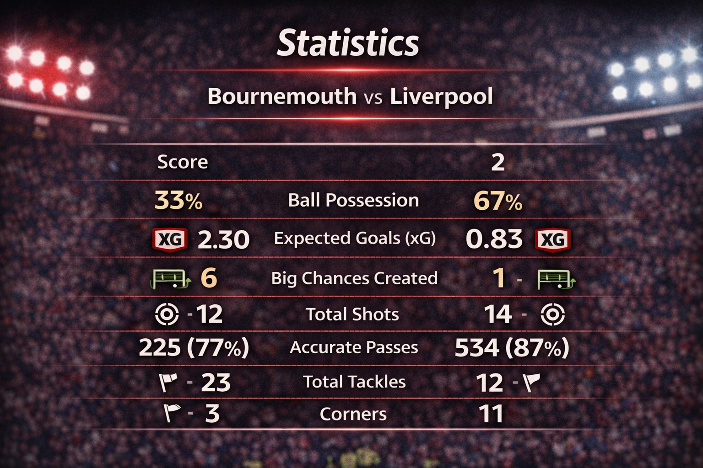

Disclaimer: This article represents personal opinion and statistical interpretation. All stats are sourced from publicly available match data, but the analysis and conclusions are subjective perspectives, not objective facts.
Liverpool's 13-game unbeaten run came to a dramatic end on Saturday as Amine Adli's 95th-minute winner secured a 3–2 victory for Bournemouth. Despite a spirited comeback from two goals down, the stats tell a story of defensive lapses and missed opportunities for the visitors.
The Match Story in Numbers
| Statistic | Bournemouth | Liverpool |
|---|---|---|
| Final Score | 3 | 2 |
| Ball Possession | 33% | 67% |
| Expected Goals (xG) | 2.30 | 0.83 |
| Big Chances Created | 6 | 1 |
| Total Shots | 12 | 14 |
| Accurate Passes | 225 (77%) | 534 (87%) |
| Total Tackles | 23 | 12 |
| Corners | 3 | 11 |
Key Takeaways
Clinical Cherries vs Wasteful Reds
Liverpool dominated possession with 67% and completed over double the passes of their hosts (534 vs 225). However, Bournemouth were far more dangerous where it mattered, creating 6 "Big Chances" to Liverpool's 1 and winning the xG battle 2.30 to 0.83.
Defensive Frailties and Individual Errors
Virgil van Dijk had a difficult evening in the backline. While he scored just before half-time to bring Liverpool back into the game, he was also heavily involved in the defensive lapses for Bournemouth's first two goals scored by Evanilson (26') and Alex Jimenez (33'). Liverpool also recorded a costly error leading directly to a goal, highlighting a lack of concentration under pressure.
Set-Piece Brilliance
Dominik Szoboszlai was a standout performer for the visitors, assisting Van Dijk's goal from a corner before scoring a stunning 80th-minute free-kick to temporarily level the match at 2–2. He finished with a team-high FotMob rating of 8.59.
Work Rate and Pressure
Bournemouth's defensive intensity was key to their success. They recorded 23 tackles, 12 interceptions, and 37 clearances to weather the Liverpool pressure, which saw the Reds make 81 final third entries.
Last-Gasp Drama
Despite Liverpool's pressure, they struggled to create high-quality chances from wide areas, completing only 4 of 20 crosses (20%). The match was eventually decided when Bournemouth failed to be contained during a stoppage-time scramble, allowing Amine Adli to score with the final kick of the game.
Where It Went Wrong for Liverpool
While the possession stats suggest total control, the underlying numbers reveal the specific tactical areas where the game was lost:
Final Third Inefficiency
Liverpool managed a massive 81 entries into the final third and completed 204 passes in that area, but they lacked the finishing touch. They failed to convert their only recorded "Big Chance" and struggled with delivery from wide areas.
Defensive Concentration
Despite having most of the ball, Liverpool were vulnerable whenever Bournemouth broke forward. The Reds allowed Bournemouth to create 6 "Big Chances" from only 33% possession, suggesting the defensive line was caught out of position far too easily.
Loss of Physical Duels
Bournemouth simply worked harder in the defensive transitions. The Cherries won 23 tackles compared to Liverpool's 12 and made 12 interceptions, effectively disrupting the rhythm of the visitors' attack and winning 54% of the total duels.
67% possession, 534 passes, 11 corners—yet only 1 big chance created and 0.83 xG. The numbers don't lie: Liverpool controlled the game but never controlled the danger.